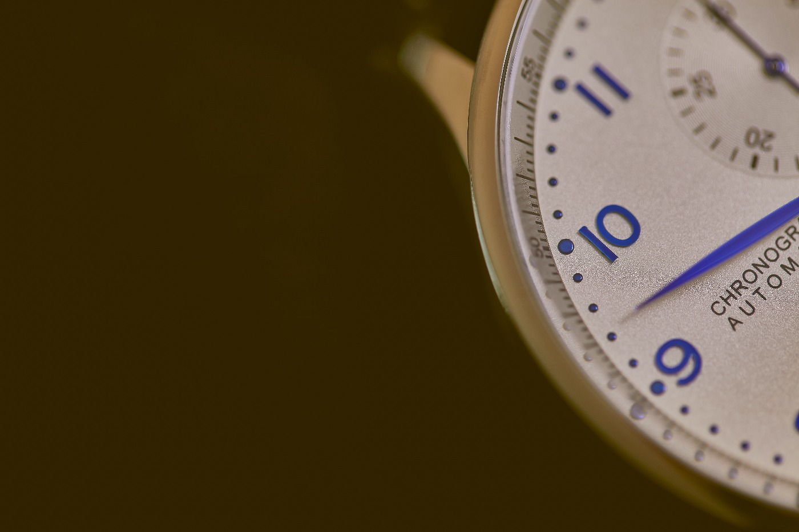

Zamanın değeri kaybolduğunda bilinir.
 Rahimbayev Altynbek ( Redactor )
May 3, 2020
Rahimbayev Altynbek ( Redactor )
May 3, 2020
Bence,zamanın değeri ölçülmez ve onun değeri sadece kaybolduğunda bilinir. Bu öğretici ifade, günümüzde çok alakalı bir konuya değinmektedir. Ve bunu başkalarına kanıtlamak istiyorum. Ilk başta, "Zaman nedir?" Maddi olarak mevcut değil, ama her şeyi yapabilir. Yani, zaman, insanları ayırabilir, hayat verebilir, bir kalbi kırabilir veya bir ruhu iyileştirebilir.
Bu konuda uzun süre tartışabilirsiniz. Ancak asıl mesele, ne kadar olursa olsun, saati geri çevirmenin imkansız olduğu gerçeğidir. Bir gün iki kez yaşayamaz.
Hayat, boş arayışlara veya değersiz insanlara harcamak için çok kısa. Bunu hayattaki en değerli şeye adamak daha iyidir .Mesela, aile-her zaman yanınızda olacak yakın insanlar.
Vakit, insanın en değerli varlığıdır. Ama biz, insanlar, onun kıymetini anlayamıyoruz. Şimdi dünyada çok insanlar vakitini boşu-boşuna harcıyor. Ve bu teknolojikadın yüzünden diye düşünüyor. Ama önceden de vakitin değerini çok insan anladı diyemeyiz. Ama onlar kendi vakitlerini tasarruf etmek için çok şeyler yarattı. Mesela, çamaşır makinesi, automobil, akıllı telefon. Fakat yine vakit yetmiyordu. Burda bir soru aklımıza geliyor. Biz nasıl vakitin değeri anlayabiliriz?


Biz hep günlük telaştan vakitin nasıl geçtiğini anlayamıyoruz ve onu nerelere harcadığımızı farketmiyoruz. Vakitin değerini anlamak ve onu faydalı geçirmek için biz bize verilen başka kıymetli şeylere çok önem vermeliyiz ve vakitimizi ona ayırmalıyız. Mesela, ailemize, yoksa ilim öğrenmeye, başka insanlara iyilik yapmaya. Vaktimizi iyi şeylere faydalansak, dünyamızda iyileşir